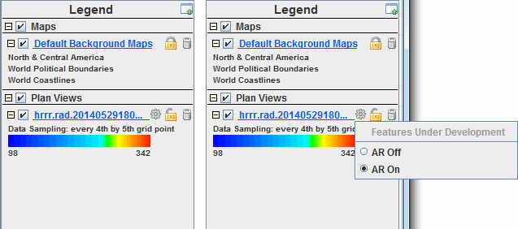

Adaptive Resolution
*** Note that Adaptive Resolution is still under development. There may be bugs and the functionality is not currently available for all data and display types. ***
Adaptive Resolution is a feature that allows for efficient displays of high-resolution data, by only displaying the highest resolution that can be displayed in the active panel of the Main Display window. Dependent on the projection and zoom level in the Main Display, along with the resolution of data, the data may be sampled so more data than necessary isn't displayed. This allows for generating quick displays of data, without taking time to display higher resolution than can be viewed in the active panel. If the data is sampled, it will be shown to the user in the Legend of the Main Display, where the layer may read 'Data Sampling: every 3rd pixel'. Users can either use Shift+left-click+drag to zoom in on a feature of interest, or change the projection, and the data will again be re-sampled to display the best resolution that can be viewed at that zoom level.
Below is an image of the Legend in the Main Display after displaying data that was sampled using Adaptive Resolution, along with the Resolution Control button items:

Image 1: Legend of Main Display Window
With adaptive resolution turned on, the data displayed is sampled down in the Main Display, which is written above the colorbar in the Legend. In the example above, this data sampling is every 7th grid point in the x by every 4th grid point in the y. This sampling text is controlled by the resolution macro in the Extra Legend Labels field of the Properties Dialog for the layer. In addition to the text for data sampling, another new feature is the Resolution Control button to the right of the blue text of the Legend Label for the layer. This button has three options:
- AR Off - Turns adaptive resolution off for the layer. Once adaptive resolution is turned off, using Shift+left-click+drag or changing the projection in the Main Display will not re-sample the data. Any data sampling that was done before adaptive resolution was turned off will remain displayed at the same resolution. Additionally, the geographical domain of the data will not change.
- AR On - Turns adaptive resolution on for the layer. Turning adaptive resolution on for will re-sample the display of the data to display only the highest resolution that can be viewed in the current state of the display panel, and only data within the current geographical domain of the panel will be displayed. Once adaptive resolution is on, using Shift+left-click+drag or changing the projection will re-sample the data to the new geographical domain at a data sampling value to give the best resolution that can be viewed in the current state of the display.
- Full Res - Sets the layer to be full resolution within the domain of the display.
There are four ways of setting if adaptive resolution is turned on or off:
- User Preferences - Sets the default for adaptive resolution through the session as a whole. This is done with the Enable Adaptive Resolution option in the Display Window tab of the User Preferences.
- Projections Menu - Sets the default for adaptive resolution for every layer added to the panel in the Main Display. This is done with the Projections->Enable Adaptive Resolution (Under Development) menu item of a panel in the Main Display.
- Resolution Control button - Sets adaptive resolution on or off for an individual layer.
- Layer Controls - Sets adaptive resolution on or off for an individual layer via the View->Enable Adaptive Resolution (Under Development) menu item.
Currently, these are the data sources that are capable of using adaptive resolution:
- Point Observations - Data added through the Point Observations->Plot/Contour chooser. When plotting gridded point data using a Plan View display, adaptive resolution impacts both the geographical domain of the display as well as the data sampling to control the resolution. When plotting using a Point Data Plot display, adaptive resolution only controls the geographical domain of the display. The data sampling used in the display is controlled by the Declutter option in the Layer Controls for the layer.
- Gridded Data - Remote data added through the Gridded Data->Remote chooser or local data added through the Gridded Data->Local or General->Files/Directories chooser. When plotting gridded data using a Plan View or another 2D display, adaptive resolution impacts both the geographical domain of the display as well as the data sampling to control the resolution. Note that adaptive resolution is currently limited to 2D display types.